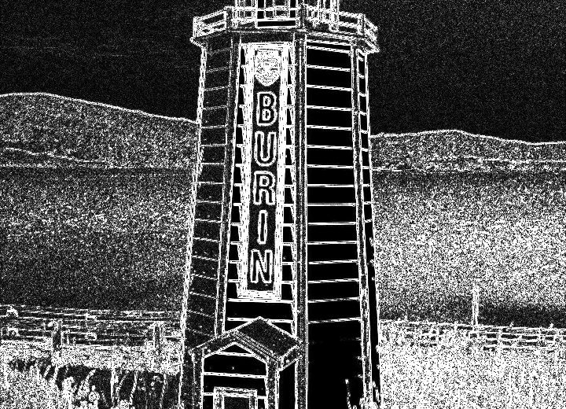
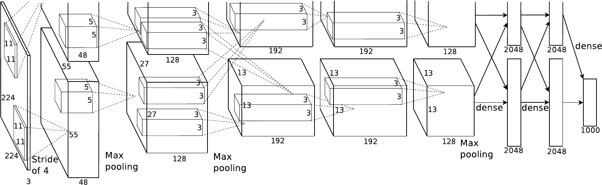

The image on the right is the lecture’s visual promise: we will not treat convolution as a mysterious layer name. We will repeatedly show the input patch, the shared filter, the numerical operation, and the resulting feature map. The recurring implementation is the CIFAR-10 classifier begun in the PyTorch coding session.
From pixels to a convolutional classifier
01
Why images need spatial structure
02
The convolution operation
03
Shape, padding, and stride
04
Channels and feature maps
05
Pooling, receptive fields, and PyTorch
06
Read and build complete CNNs
Use this as the contract for the lecture. Start from the concrete failure of flattening an image, then spend most of the time making convolution visible and computable. Separate spatial output geometry from channel mixing so students can reason about each axis. Pooling and receptive fields explain how local evidence becomes contextual evidence. The last section translates every mechanism into the torch.nn model used in the second coding session. Architecture history and residual networks belong to the next chapter.
01 · Why images need spatial structure
Move the object; keep the answer
IMAGE A
boat
→same pixels, new position
IMAGE B
boat
DESIGN QUESTIONShould learning “boat on the left” be independent from learning “boat on the right”?
No. The useful evidence moved; its meaning did not.
Begin with the prediction, not the mechanism. Ask students whether both images deserve the same label. They do. Then ask the design question. An ordinary fully connected model can learn both positions, but it has no built-in reason to reuse the detector learned at the first position. Avoid saying that CNNs are perfectly translation invariant; convolution is translation equivariant away from boundary and sampling effects, while pooling and aggregation can add limited robustness.
Flattening keeps values—and breaks the map
IMAGE TENSOR · 8 × 8
Neighbors in the grid describe edges, corners, and texture.
reshape→
VECTOR · 64
Index 23 is close to 24—but what happened above, below, and diagonally?
THE NUMBERS SURVIVEThe two-dimensional neighborhood is no longer explicit to the layer.
Clarify the precise claim. Flattening is reversible if shape metadata is retained, so it does not mathematically destroy values. The problem is architectural: after flattening, a generic dense layer assigns an unrelated parameter to every input coordinate and does not encode which pixels were neighbors. It can relearn spatial relationships from data, but we have discarded a powerful prior that images give us for free.
Full connectivity spends parameters on every location
ONE HIDDEN UNITHow many incoming weights does it need?
CIFAR-10
32323
\(32\times32\times3\)
3,072 weights for one neuron
larger image×39
SMALL PHOTO
2002003
\(200\times200\times3\)
120,000 weights for one neuron
ADD 1,000 HIDDEN UNITS120 million weights in the first layer alone
Let students calculate before revealing each count. CIFAR-10 is manageable, but the same dense design scales directly with image area. The 120-million figure excludes biases and all later layers. Parameter count is not the only issue; the more fundamental waste is that a useful local pattern has a separate weight set at every absolute position.
Most visual evidence is local
?
?
?
PATCH 1vertical edgeneighboring pixels change together
PATCH 2cornertwo local boundaries meet
PATCH 3flat regionlittle local variation
To detect a small pattern here, inspect a small neighborhood here.This is local connectivity.
Reveal the interpretations one patch at a time. A low-level visual pattern can often be decided from nearby pixels; a unit does not need to connect to the entire image to detect it. “Local” does not mean the final prediction only sees a small patch. Stacking layers grows the receptive field, which we will visualize later.
Find the same edge three times
VISUAL SEARCHOne detector is shown in coral. Where else should we use it?
ONE PATTERN · MANY POSITIONSLearn the detector once, then slide it across the image.
Pause after the first response and ask students to point to the other vertical edges. Reveal the other two uses. The detector’s parameters do not change as it moves. This is spatial parameter sharing, the decisive contrast with a dense layer’s separate parameter for every input-to-unit connection. The next section will make the detector numerical and name the sliding operation convolution.
The label stays; the pixels can change completely
IGNOREchanges that should not alter the class
NOTICEsmall evidence that distinguishes one class from another
The representation must become stable to nuisance variation without becoming blind to useful spatial detail.
Let students scan the photographs before reading the labels. Ask which changes should preserve the category and where the discriminative evidence remains. The two demands are in tension: a representation should suppress viewpoint, scale, deformation, occlusion, illumination, and background changes when they are irrelevant, yet preserve the details that separate classes. Do not claim that convolution alone grants invariance to every listed transformation. Local connectivity and shared filters provide an efficient starting bias; learned hierarchies, pooling, data augmentation, and training data contribute further robustness.
Three image assumptions become one architecture
WHAT WE OBSERVEDNearby pixels form useful patterns.
WHAT WE EXPECTThe same pattern can matter anywhere.
WHAT DEPTH CAN DOSmall patterns can compose into larger ones.
local connectivityinspect a patch
shared weightsreuse one detector
feature hierarchystack learned maps
THE CONVOLUTIONAL IDEAA small learned filter moves across the spatial grid and records where its pattern appears.
This is the abstraction only after the evidence. Map each observation to its architectural choice. Feature hierarchy is a promise for the receptive-field section, not something to fully explain here. End by pointing back to the cover image: input grid, small filter, output feature map. We are now ready to calculate a convolution one position at a time.
02 · The convolution operation
One patch produces one output value
INPUT IMAGE
1100011000110110001100011
×elementwise
LEARNED FILTER
10−110−110−1
3 × 3 weights
→sum
FEATURE MAP
3
one location filled
Align → multiply matching cells → add the products → write one number.
Hold the slide before the output appears. The highlighted 3 by 3 patch contains a bright region on its left and zeros on its right, so it agrees with the positive-left, negative-right filter. Multiply corresponding cells and sum; the response is 3. Stress the correspondence: one patch and one filter produce one scalar at one spatial position in the output. Bias is omitted for the first calculation and added explicitly on the next slide.
Calculate the response before revealing it
PATCH \(X\)
110110110
⊙
FILTER \(K\)
10−110−110−1
+
BIAS−1
The filter sees a bright region on the left. Compute the output activation \(y\).
PAUSE45 secondsMultiply cell by cell; then add all nine products and the bias.
WORKED SOLUTION
100100100
\(y=(1+0+0)+(1+0+0)+(1+0+0)-1=2\)
Enforce the pause. Students should obtain three positive products, no negative products, and then add the bias of minus one. Reveal the product strip before reading the compact equation. This is the affine operation performed at a single location. If a nonlinearity follows the convolution, it acts on this response afterward; do not mix that separate step into the convolution arithmetic.
Slide the same filter; write the next value
FIXED FOR THIS EXAMPLE3 × 3 filter · stride 1 · no padding
The output keeps a spatial map: nearby responses came from nearby input patches.
Reveal the three filter positions in order. With stride one, the window moves one input cell horizontally and the response is written one output cell horizontally. Do not spend time verifying all three arithmetic values—the purpose is the spatial correspondence. Point out that a 5 by 5 input and a 3 by 3 filter admit three horizontal and three vertical valid placements, hence the 3 by 3 output. The general sizing rule belongs to the next section.
A feature map is a map of matches
INPUT
VERTICAL-EDGE FILTER
10−110−110−1
one learned pattern
FEATURE MAP
weak matchstrong match
High response = this filter’s pattern was present at this position.
Read the result spatially. The feature map is not a compressed class label; it records where one learned pattern responds. Stronger contrast produces a stronger magnitude. Depending on the filter sign, the opposite edge direction can produce a negative response, which is not represented in this simplified positive heatmap. Later, multiple filters will produce multiple maps for different patterns.
Filters are learned—not chosen by hand
BEFORE TRAINING
.2−.1.3−.2.1.0.1−.3.2
random weights
images+labels
loss → backpropagation → optimizer→
AFTER TRAINING
.8.0−.81.0.1−.9.7.0−.7
one possible useful pattern
WHAT CHANGED?Only the connectivity pattern was designed. The data shaped the numerical detector.
The hand-written edge filter was a transparent teaching device. In a CNN, filter values are ordinary parameters initialized numerically and updated by the optimizer using gradients. Training is not guaranteed to produce this exact edge detector, and deeper filters are rarely this directly interpretable. The architecture supplies locality and sharing; the dataset and loss determine which patterns become useful for prediction.
The kernel changes what the response emphasizes
SAME PHOTOGRAPHOnly the 3 × 3 kernel changes
SMOOTH
⅑⅑⅑⅑⅑⅑⅑⅑⅑
average nearby pixels noise and fine detail respond less
DETECT EDGES

−1−1−1−18−1−1−1−1
respond to local change flat regions approach zero
Reveal one result at a time while keeping the photograph fixed. For smoothing, every output is a local average, so isolated changes and fine texture weaken. For edge detection, the weights sum to zero: a constant patch therefore gives zero, while a local intensity change produces a large magnitude. Sharpening retains the center and subtracts neighboring values, increasing local contrast. These are fixed illustrative kernels, not a catalogue students must memorize. A CNN learns filters appropriate to its loss rather than selecting these three by name. Open Victor Powell’s interactive demo if time permits; students can hover over a pixel to inspect its exact calculation.
03 · Shape, padding, and stride
Without padding, every convolution shrinks the map
INPUT · 5 × 5
LEGAL TOP-LEFT POSITIONS
0→1→2
The 3 × 3 filter cannot start at column 3 or 4.
OUTPUT · 3 × 3
5 − 3 + 1 = 3
BORDER COSTInterior pixels participate in more patches than corner pixels.
Start horizontally. A 3-wide filter can begin at input columns 0, 1, or 2. Starting at 3 would require a column beyond the image. The exact same count applies vertically, giving a 3 by 3 output. The plus one counts the starting placement itself. Then mention the border asymmetry: without padding, a corner belongs to one 3 by 3 patch, while the center belongs to nine patches.
Padding gives the filter a border to stand on
ZERO PADDING · \(P=1\)
0000000011111001111100111110011111001111100000000
1
The working width becomes \(5+2P=7\).
2
The filter may now center on an original border pixel.
3
Legal starts become \(0,1,2,3,4\).
RESULT5 × 5 → 5 × 5when K = 3, P = 1, S = 1
Padding does not invent image evidence; it defines what the operation assumes beyond the boundary.
The dark blue 5 by 5 region is the original image; the pale outer ring is one cell of zeros on every side. Padding one cell adds two cells to each spatial dimension, not one. Move the highlighted 3 by 3 filter to the upper-left legal position: its center now aligns with the original corner. With kernel 3, stride 1, and padding 1, the output preserves spatial size. Zero padding is common, but reflect and replicate padding encode different boundary assumptions.
Stride controls how far the filter jumps
SAME INPUT · SAME KERNEL · NO PADDING5 × 5 image · 3 × 3 kernel
STRIDE 1move one cell
→
9 placements
3 × 3
STRIDE 2move two cells
→
4 placements
2 × 2
STRIDE DOES TWO THINGSreduces the output size·skips intermediate filter placements
Keep the input, 3 by 3 kernel, and padding fixed. The dots mark filter centers, hence one output value per dot. With stride one, the kernel starts at rows and columns 0, 1, 2: nine placements produce a 3 by 3 map. With stride two, it starts only at rows and columns 0 and 2: four placements produce a 2 by 2 map. The coral square shows the same first kernel placement in both cases. “Downsampling” is descriptive, not automatically beneficial: intermediate placements are never evaluated by the stride-two layer.
Count starts—not pixels
ONE SPATIAL AXIS
\(P\)
\(W_{in}\)
\(P\)
\(K\)
Total working width: \(W_{in}+2P\)
1 · LAST STARTWin + 2P − Kmove until the filter’s far edge still fits
2 · NUMBER OF MOVES⌊(Win + 2P − K) / S⌋each move advances S cells
3 · COUNT THE FIRST POSITION+1zero moves is already one valid placement
Do not reveal all three steps together. The padded axis has total length W-in plus 2P. A K-wide filter’s last legal starting coordinate is total width minus K. Dividing by stride counts how many full jumps reach legal positions; the floor discards a final incomplete jump. Finally add one because a starting coordinate of zero is a valid placement before any move. This derivation assumes dilation one; dilation is deliberately outside this introductory formula.
Width and height use the same reasoning
RECTANGULAR INPUT
\(H_{in}=6\)\(W_{in}=8\)\(K=3\)
\(P=1\) on every side · \(S=2\) on both axes
WIDTH⌊(8 + 2 − 3) / 2⌋ + 1 = 4
HEIGHT⌊(6 + 2 − 3) / 2⌋ + 1 = 3
OUTPUT
3 × 4
If kernel, padding, or stride differ by axis, substitute \(K_h,P_h,S_h\) and \(K_w,P_w,S_w\) separately.
Apply the one-dimensional derivation twice. Quarto and PyTorch shape convention is height then width, so the resulting spatial shape is 3 by 4 even though width was calculated first here. The symmetric scalar settings K=3, P=1, S=2 apply to both axes. PyTorch also accepts tuples, for example kernel size (3,5), in which case calculate each axis with its own values.
Your turn: predict the output shape
GIVENS
input32 × 32
kernel5 × 5
padding2
stride2
TASKDerive \(H_{out}\) and \(W_{out}\). Do not guess from “stride halves.” Count legal starts.
PAUSE60 secondsWrite the formula, substitute once, then explain the final \(+1\).
The floor removes an incomplete final jump; \(+1\) counts the starting placement.
Give students the full minute. Both axes share the same values, so one substitution is enough, but they must state both output dimensions. Ask one student to explain the floor and another to explain plus one. A useful verification is to compute the padded width 36: the last legal start is 31, and stride-two starts are 0 through 30, giving 16 positions.
Choose geometry by the representation you need
PRESERVE SIZE
→
\(K=3,\;S=1,\;P=1\) 8 × 8 → 8 × 8
SHRINK NATURALLY
→
\(K=3,\;S=1,\;P=0\) 8 × 8 → 6 × 6
DOWNSAMPLE
→
\(K=3,\;S=2,\;P=1\) 8 × 8 → 4 × 4
BEFORE BUILDING THE NEXT LAYERWrite \((H,W)\) → substitute → floor → add one → verify the result is positive.
End with decisions, not algebra. Padding one with a 3 by 3 kernel and stride one is the familiar same-size pattern. No padding shrinks the map by two. Stride two with padding one roughly halves it; for even size 8 the exact result is 4. Make students calculate rather than rely on “roughly.” The checklist is the habit to carry into model construction and debugging. Open the visualizer and reproduce one of the three cards if time permits; students can change one parameter and immediately inspect the output geometry.
04 · Channels and feature maps
A color image is three aligned spatial maps
one imageheight × width × color
R
G
B
PYTORCH SAMPLE SHAPE\((C,H,W)=(3,H,W)\)
same rowsame columnthree measurements
Channels are aligned descriptions of each spatial position.
Separate “channel” from “object.” An RGB image has three aligned measurements at every pixel coordinate. PyTorch stores a single image channel-first as C, H, W. The three sheets do not represent three independent images, and channel order is not spatial depth in the physical scene. This distinction becomes essential when a filter combines channels.
One filter must span every input channel
ONE 3 × 3 RGB PATCH
R3 × 3
G3 × 3
B3 × 3
⊙channel by channel
ONE FILTER
\(K_R\)3 × 3
\(K_G\)3 × 3
\(K_B\)3 × 3
shape: 3 × 3 × 3
SUM ALL CHANNELS
R response+G response+B response+ bias
one scalar
The filter’s depth is not a choice: it must equal \(C_{in}\).
Follow one spatial patch only. The filter has a separate 3 by 3 weight slice for red, green, and blue. Multiply each input-channel patch by its corresponding filter slice, sum all 27 products, then add one bias. The result is still one scalar. A filter cannot choose to have depth two when the input has three channels; its depth must match C-in.
One filter creates one feature map
INPUT VOLUME
3 × 32 × 32
→
FILTER BANK
123456
6 filterseach filter spans all 3 input channels
→
OUTPUT VOLUME
6 × 30 × 30\(K=3\), \(P=0\), \(S=1\)
COUNT THE OUTPUT CHANNELS\(C_{out}\) = number of filters
Each filter slides over the same input volume and produces one two-dimensional response map. Six different filters therefore produce six maps, stacked as the six channels of the output volume. Spatial geometry is computed with the formula from Section 3: 32 becomes 30 here. Keep the two counts distinct: input channels determine each filter’s depth; the number of filters determines output channels.
Read a convolution as a shape contract
PYTORCH BATCH ORDERN × C × H × W
INPUT(64, 3, 32, 32)64 RGB images
16 filters3 × 3 · P=1 · S=1
OUTPUT(64, 16, 32, 32)16 maps per image
N = 64convolution processes every batch item
Cout = 16one channel per learned filter
Hout = Wout = 32padding preserves spatial size
Read the tuple from left to right. Convolution does not mix examples, so batch size remains 64. Sixteen filters create sixteen output maps for every image. Kernel 3, padding 1, stride 1 preserves 32 by 32. This is the debugging contract students should state before writing a layer. Emphasize that PyTorch uses NCHW, whereas image files or NumPy arrays often arrive as HWC.
How many parameters does this layer learn?
ONE FILTER
3 × 33 × 33 × 3
\(3\cdot3\cdot3=27\) weights plus one bias
16 FILTERS
\(16(27+1)=448\) learnable parameters
GENERAL RULE
#θ = Cout (CinKhKw + 1)
Parameter count does not depend on image height or width.
Count one filter before multiplying by the number of filters. Each output filter owns C-in times K-h times K-w weights and one scalar bias. With three input channels and a 3 by 3 kernel, that is 27 plus one. Sixteen filters give 448. The spatial reuse is visible in the formula: H and W do not appear. If bias is disabled, remove the plus one.
Trained filters become different visual questions
ALEXNET · FIRST-LAYER FILTERSdifferent weights → different patterns
ONE IMAGE · MANY ACTIVATION MAPSdifferent filters → different response maps
DO NOT ASK “WHAT DOES THE LAYER SEE?”Ask: which filter, and where does its feature map respond?
Give students time to inspect the filters. First-layer filters often resemble oriented edges, color transitions, and blobs. The activation panel shows one response map per filter for one image; bright locations indicate strong positive response. These are examples from a trained AlexNet, not a universal dictionary. Deeper-layer filters span input feature channels rather than raw RGB, so their weights are harder to visualize directly.
Before the next layer, verify channels and spatial geometry independently.
Close by asking two rapid questions. If input has 32 channels, how deep is every filter? Thirty-two. If the layer has 64 filters, how many output maps? Sixty-four. Then read the full shape contract. This separation prevents the most common conceptual mistake before implementing a CNN.
kernel_size = 33 × 3 local windowone integer applies to both axes
stride = 1 · padding = 1movement and borderpreserve 32 × 32 here
DECLARATION ≠ EXECUTIONnn.Conv2d(...) owns the learnable filters; conv(x) applies them to a batch.
Connect every constructor argument to the visual contract from the preceding section. In-channels fixes the depth of every filter; out-channels counts independently learned filters. Kernel size, stride, and padding control spatial geometry. Creating the module allocates and registers parameters—it does not process data. The forward call applies the same filter bank to all 64 images. Ask students to predict the output before revealing the printed shape.
Why reduce a feature map?
EARLY FEATURE MAP
precise location32 × 32 values
→summarize neighborhoods
REDUCED MAP
coarser location16 × 16 values
THE TRADE
keep
the strongest local evidence
lose
some exact position
gain
less computation downstream
Start from a feature map, not a raw image. The highlighted response might mean an edge or texture was found. Pooling summarizes nearby responses and reduces spatial resolution. It does not create new channels and normally has no learned weights. The benefit is cheaper later computation and tolerance to small shifts; the cost is discarded spatial detail. This is a design trade, not an automatic improvement.
Max pooling keeps one winner per window
4 × 4 FEATURE MAP
1320461521320748
window 2 × 2 · stride 2
→maximum of each color block
2 × 2 OUTPUT
6578
no weighted sumno learnable parameters
ONE CHANNEL AT A TIMEMax pooling changes H and W—not the number of channels.
Trace each non-overlapping 2 by 2 region. The maximum becomes one output value: 6, 5, 7, and 8. Pooling applies independently to every feature map, so C is preserved. Unlike convolution, there is no dot product, bias, or filter bank. With kernel two and stride two, each spatial dimension is halved when it is even.
Max and average pooling answer different questions
For the patch [1, 2; 3, 8], what evidence should survive?
MAX POOL
1238
→ 8
“Was the feature strongly present anywhere?”
AVERAGE POOL
1238
→ 3.5
“How much feature evidence was present overall?”
The output shape can be identical; the retained information is not.
Use the same input patch to isolate the aggregation rule. Max pooling preserves the strongest detection; average pooling measures mean activity. Neither is universally best. Max pooling was historically common in classification CNNs, while learned strided convolutions and global average pooling are also common architectural choices. The important question is what information the reduction should preserve.
Depth lets one unit combine a larger pattern
CONCRETE QUESTIONHow could one later unit respond to an eye-like part?
LAYER 1 · 3 × 3 VIEW
short edges combine nearby pixels
→combine neighboring edge responses
LAYER 2 · 5 × 5 VIEW
curves and corners combine compatible edges
→combine neighboring motif responses
LAYER 3 · 7 × 7 VIEW
an eye-like part combine motifs over a wider region
THREE 3 × 3 CONVOLUTIONS · STRIDE 1
start1→ +23→ +25→ +27
Each layer can use a wider region of the original image.
Course-made illustration. Receptive-field arithmetic follows the convolution relationships in Stanford CS231n (Li et al., n.d.).
Begin with the eye-like target on the right, then work from left to right. A first-layer unit can only combine a small patch of pixels, so a short oriented edge is a plausible feature. A second-layer unit receives neighboring first-layer responses and can combine compatible edges into a curve or corner. A third-layer unit can combine those motifs over a seven-by-seven region. For stride-one three-by-three convolutions, begin with one input pixel and add two pixels to the receptive-field width at every layer: one, three, five, seven. Say “could learn,” not “must learn”: depth provides the spatial scope and compositional mechanism, while training determines the actual features.
Global average pooling turns each map into one number
16 FEATURE MAPS
(N, 16, 8, 8)
AVERAGE ALL H × W LOCATIONS
map 1→0.72
map 2→0.11
⋮⋮
map 16→0.64
ONE VALUE PER CHANNEL
.72.11….64
(N, 16, 1, 1) then flatten → (N, 16)
LOCALIZATION → PRESENCE“Where did the feature fire?” becomes “How much did it fire?”
Contrast local pooling with global average pooling. Local pooling slides a small window and keeps a smaller spatial map. Global pooling uses the entire spatial extent as one window, producing one scalar for each channel. It therefore removes spatial location completely while retaining a summary of each learned feature. This often forms a compact bridge from convolutional features to a classifier.
WORKED ABOVEnn.MaxPool2dstrongest value in each local window
LOCAL MEANnn.AvgPool2daverage value in each local window
FIXED OUTPUT SIZEnn.AdaptiveAvgPool2daverage into the requested Hout × Wout
FIXED OUTPUT SIZEnn.AdaptiveMaxPool2dmaximum into the requested Hout × Wout
All these pooling methods operate independently on tensors shaped (N, C, H, W); none changes C.
Present modules because they fit naturally inside nn.Sequential and model definitions. Functional equivalents also exist in torch.nn.functional: max_pool2d, avg_pool2d, and adaptive_avg_pool2d. Adaptive pooling is convenient when input resolution may vary because students specify the desired output size rather than calculating a kernel manually. For global average pooling, output size one is the clearest intent.
The complete reduction story
CONVOLUTION
(N, 16, 32, 32)learn new local features
→
LOCAL POOL
(N, 16, 16, 16)keep coarse spatial evidence
→
GLOBAL POOL
(N, 16)one summary per feature
Convolution changes what is represented.Pooling changes how precisely it is located.
Finish by telling the complete shape story. Convolution learns features and can change channels. Local pooling reduces spatial precision while retaining a grid. Global pooling removes the grid and leaves one summary per channel. This prepares students to assemble a complete model in the final section. Stress that pooling never mixes examples in the batch and ordinarily never mixes channels.
06 · Read and build complete CNNs
AlexNet: can we read this model now?

READ LEFT → RIGHTWhich shapes, convolutions, and pooling operations can you already explain?
Original Figure 2 from “ImageNet Classification with Deep Convolutional Neural Networks,” Krizhevsky, Sutskever & Hinton (Krizhevsky et al. 2012). Read the paper ↗
Show the historical figure without translating or simplifying it first. Give students time to inspect the real architecture and retrieve the vocabulary developed so far: filters, channel counts, spatial sizes, stride, max pooling, and dense layers. The upper and lower paths reflect the original model’s split across two GPUs. Stop here before unpacking the architecture in subsequent slides.
READ TOP → BOTTOMEach line transforms the output shape of the line before it.
Use this deliberately small example to establish the reading direction in the framework students already know. PyTorch tensors use channels-first notation: batch, channels, height, width. Padding one preserves 28 by 28, Conv2d creates eight output channels, and pooling halves only the spatial dimensions. Flatten converts 8 times 14 times 14 into 1,568 values before Linear produces ten class scores. Point to one code line and then its matching stage in the diagram; the diagram is a translation of the code, not a second architecture.
THE REPEATED PATTERNConvolution changes the feature channels; pooling changes the spatial resolution.
Read the code and drawing together. The input is a batch of 32 by 32 RGB images. In each block, padding one lets the 3 by 3 convolution preserve height and width, ReLU preserves the entire shape, and max pooling halves height and width. The first block changes 3 channels into 16 and ends at 16 by 16. The second changes 16 channels into 32 and ends at 8 by 8. Flatten therefore receives 32 times 8 times 8, or 2,048 values per image. Use the repeated colors and aligned labels to make the composition visible without naming it as a classical architecture.
32 → 16 → 8 → 1two local pools, then global average pooling
ReLU + poolingchange values or shape, but own no learned weights
Honor the pause before revealing the reading. Students should identify learned layers by operation semantics, not by counting every printed row: the three convolutions and the linear layer own parameters; the ReLU and pooling operations do not. The two max-pooling rows halve height and width. Adaptive average pooling collapses the remaining 8 by 8 grid to one number per channel, so the linear layer receives 64 features. The indices are the order assigned by Sequential. This architecture is intentionally unnamed: the aim is to read compositions, not preview the named architecture families of the next lecture.

{kind=link}
 different weights → different patterns
different weights → different patterns different filters → different response maps
different filters → different response maps